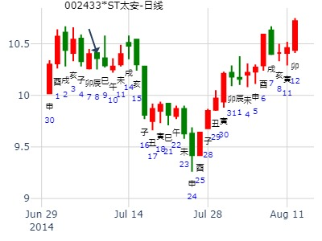
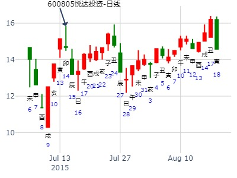
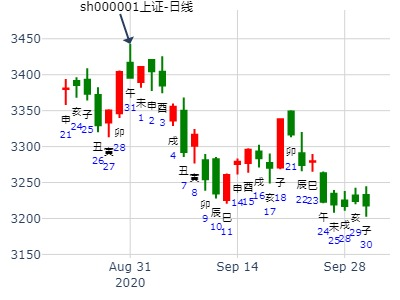

主帖标题: 今日午日，清2/3仓出局。
大显股份[600747]，今日何时买入明日何时卖出得财？ 排卦：元亨利贞网
公历起卦时间：2008年1月9日5时28分 (手工指定)
干支：丁亥年 癸丑月 戊申日 乙卯时 （日空：寅卯）
时间: 2008-01-09
干支: 丁亥年癸丑月戊申日 (旬空: 寅卯 )
旅静卦
朱雀 ▅▅▅▅▅ 兄弟巳火
青龙 ▅▅ ▅▅ 子孙未土
玄武 ▅▅▅▅▅ 妻财酉金 应
白虎 官鬼亥水▅▅▅▅▅ 妻财申金
腾蛇 ▅▅ ▅▅ 兄弟午火
勾陈 父母卯木▅▅ ▅▅ 子孙辰土 世
占事：512880下周
时间: 2019-01-27
干支: 戊戌年乙丑月甲子日 (旬空: 戌亥 )
旅静卦
玄武 ▅▅▅▅▅ 兄弟巳火
白虎 ▅▅ ▅▅ 子孙未土
腾蛇 ▅▅▅▅▅ 妻财酉金 应
勾陈 官鬼亥水▅▅▅▅▅ 妻财申金
朱雀 ▅▅ ▅▅ 兄弟午火
青龙 父母卯木▅▅ ▅▅ 子孙辰土 世
火山旅静卦，问中美贸易谈判能否谈成？
公历起卦时间：2020年1月8日12时21分 (在线摇卦) 晖
干支：己亥年 丁丑月 庚戌日 壬午时 （日空：寅卯）
离宫：火山旅 离宫：火山旅
六神 伏神 本 卦 变 卦
腾蛇 兄弟己巳火 ▅▅▅▅▅ 兄弟己巳火 ▅▅▅▅▅
勾陈 子孙己未土 ▅▅ ▅▅ 子孙己未土 ▅▅ ▅▅
朱雀 妻财己酉金 ▅▅▅▅▅ 应 妻财己酉金 ▅▅▅▅▅ 应
青龙 官鬼己亥水 妻财丙申金 ▅▅▅▅▅ 妻财丙申金 ▅▅▅▅▅
玄武 兄弟丙午火 ▅▅ ▅▅ 兄弟丙午火 ▅▅ ▅▅
白虎 父母己卯木 子孙丙辰土 ▅▅ ▅▅ 世 子孙丙辰土 ▅▅ ▅▅ 世
六合卦，谈成。
小言问2022年财运。火山旅静卦。
时间: 2022-01-01
干支: 辛丑年庚子月甲寅日 (旬空: 子丑 )
旅静卦
玄武 ▅▅▅▅▅ 兄弟巳火
白虎 ▅▅ ▅▅ 子孙未土
腾蛇 ▅▅▅▅▅ 妻财酉金 应
勾陈 官鬼亥水▅▅▅▅▅ 妻财申金
朱雀 ▅▅ ▅▅ 兄弟午火
青龙 父母卯木▅▅ ▅▅ 子孙辰土 世
巨力索具2周。 火山旅静卦。.md
时间: 2022-01-06 16时05分
干支: 辛丑年辛丑月己未日 (旬空: 子丑 )
旅静卦
勾陈 ▅▅▅▅▅ 兄弟巳火
朱雀 ▅▅ ▅▅ 子孙未土
青龙 ▅▅▅▅▅ 妻财酉金 应
玄武 官鬼亥水▅▅▅▅▅ 妻财申金
白虎 ▅▅ ▅▅ 兄弟午火
腾蛇 父母卯木▅▅ ▅▅ 子孙辰土 世
长虹美菱未来几个月走势 --天同
时间: 2025-01-02 10时42分
干支: 甲辰年丙子月辛未日 (旬空: 戌亥 )
旅静卦
腾蛇 ▅▅▅▅▅ 兄弟巳火
勾陈 ▅▅ ▅▅ 子孙未土
朱雀 ▅▅▅▅▅ 妻财酉金 应
青龙 官鬼亥水▅▅▅▅▅ 妻财申金
玄武 ▅▅ ▅▅ 兄弟午火
白虎 父母卯木▅▅ ▅▅ 子孙辰土 世
宝信软件未来三个月走势？
时间: 2019-03-12
干支: 己亥年丁卯月戊申日 (旬空: 寅卯 )
旅静卦
朱雀 ▅▅▅▅▅ 兄弟巳火
青龙 ▅▅ ▅▅ 子孙未土
玄武 ▅▅▅▅▅ 妻财酉金 应
白虎 官鬼亥水▅▅▅▅▅ 妻财申金
腾蛇 ▅▅ ▅▅ 兄弟午火
勾陈 父母卯木▅▅ ▅▅ 子孙辰土 世
华数传媒未来一个月走势。
时间: 2019-03-23 8时13分
干支: 己亥年丁卯月己未日 (旬空: 子丑 )
旅静卦
勾陈 ▅▅▅▅▅ 兄弟巳火
朱雀 ▅▅ ▅▅ 子孙未土
青龙 ▅▅▅▅▅ 妻财酉金 应
玄武 官鬼亥水▅▅▅▅▅ 妻财申金
白虎 ▅▅ ▅▅ 兄弟午火
腾蛇 父母卯木▅▅ ▅▅ 子孙辰土 世
中线以上的卦，月破的威力。
主帖标题: 捍卫老祖宗感通卦的尊严：测2020.3.4上证走势？N05
测2020.3.4上证收盘十位数 yn godzx
男 占事：没填
公历起卦时间：2020年3月4日11时53分 (电脑自动)
干支：庚子年 戊寅月 丙午日 甲午时 （日空：寅卯）
离宫：火山旅
六神 伏神 本 卦
青龙 兄弟己巳火 ▅▅▅▅▅
玄武 子孙己未土 ▅▅ ▅▅
白虎 妻财己酉金 ▅▅▅▅▅ 应
螣蛇 官鬼己亥水 妻财丙申金 ▅▅▅▅▅
勾陈 兄弟丙午火 ▅▅ ▅▅
朱雀 父母己卯木 子孙丙辰土 ▅▅ ▅▅ 世
主帖标题: 试测上证2021.3.8收盘 个位数是几？
7
男 占事：没填
公历起卦时间：2021年3月6日10时5分 (电脑自动)
干支：辛丑年 辛卯月 癸丑日 丁巳时 （日空：寅卯）
离宫：火山旅 离宫：火山旅
六神 伏神 本 卦 变 卦
白虎 兄弟己巳火 ▅▅▅▅▅ 兄弟己巳火 ▅▅▅▅▅
螣蛇 子孙己未土 ▅▅ ▅▅ 子孙己未土 ▅▅ ▅▅
勾陈 妻财己酉金 ▅▅▅▅▅ 应 妻财己酉金 ▅▅▅▅▅ 应
朱雀 官鬼己亥水 妻财丙申金 ▅▅▅▅▅ 妻财丙申金 ▅▅▅▅▅
青龙 兄弟丙午火 ▅▅ ▅▅ 兄弟丙午火 ▅▅ ▅▅
玄武 父母己卯木 子孙丙辰土 ▅▅ ▅▅ 世 子孙丙辰土 ▅▅ ▅▅ 世

主帖标题: 有色金属板块还有行情吗？
辰月何类股票具有涨幅？
丁亥 甲辰 辛未 甲午 (戌亥空)
丁亥年二月廿十(2007/04/07 11:48:17)
火山旅
腾蛇 兄弟巳火 ／
勾陈 子孙未土 ∥
朱雀 妻财酉金 ／ 应官鬼亥水：
青龙 妻财申金 ／
玄武 兄弟午火 ∥ 父母卯木：
白虎 子孙辰土 ∥ 世
主帖标题: 请易经高手解4月19日大盘涨跌卦!
占事：4月19日大盘涨跌? 起卦方式：手动摇卦
公历时间：2007年4月18日17时31分 星期三
干支：丁亥年 甲辰月 壬午日 己酉时 (旬空：申酉)
离宫：火山旅
白虎 ▅▅▅▅▅ 兄弟己巳火
螣蛇 ▅▅ ▅▅ 子孙己未土
勾陈 ▅▅▅▅▅ 妻财己酉金 应
朱雀 官鬼己亥水 ▅▅▅▅▅ 妻财丙申金
青龙 ▅▅ ▅▅ 兄弟丙午火
玄武 父母己卯木 ▅▅ ▅▅ 子孙丙辰土 世

主帖标题: 占事：2016年4月18-22日 上证指数下周升跌走势
占事：上证指数下周升跌走势？
公历起卦时间：2016年4月17日18时32分
干支：丙申年 壬辰月 己巳日 癸酉时 （日空：戌亥）
离宫： 火山旅
勾陈 兄弟己巳火 ▅▅▅▅▅
朱雀 子孙己未土 ▅▅ ▅▅
青龙 妻财己酉金 ▅▅▅▅▅ 应
玄武 官鬼己亥水 妻财丙申金 ▅▅▅▅▅
白虎 兄弟丙午火 ▅▅ ▅▅
腾蛇 父母己卯木 子孙丙辰土 ▅▅ ▅▅ 世

主帖标题: 4月21日沪市行情
公历时间：2016年4月21日10时37分
干 支：丙申年 壬辰月 癸酉日 丁巳时
旬 空：辰巳 午未 (戌亥) 子丑
离宫：火山旅
白虎 ▄▄▄▄▄ 兄弟己巳火
螣蛇 ▄▄ ▄▄ 子孙己未土
勾陈 ▄▄▄▄▄ 妻财己酉金 应
朱雀 官鬼己亥水 ▄▄▄▄▄ 妻财丙申金
青龙 ▄▄ ▄▄ 兄弟丙午火
玄武 父母己卯木 ▄▄ ▄▄ 子孙丙辰土 世

测000158常山北明在2020.5.18--2020.5.22走势
公历起卦时间：2020年5月17日22时24分 (手工指定)
干支：庚子年 辛巳月 庚申日 丁亥时 （日空：子丑）
离宫：火山旅
螣蛇 兄弟己巳火 ▅▅▅▅▅
勾陈 子孙己未土 ▅▅ ▅▅
朱雀 妻财己酉金 ▅▅▅▅▅ 应
青龙 官鬼己亥水 妻财丙申金 ▅▅▅▅▅
玄武 兄弟丙午火 ▅▅ ▅▅
白虎 父母己卯木 子孙丙辰土 ▅▅ ▅▅ 世
主帖标题: 请易经高手解6月13日大盘涨跌卦!
占事：6月13日大盘涨跌?
公历时间：2007年6月12日15时32分 星期二
干支：丁亥年丙午月丁丑日戊申时 (旬空：申酉)
离宫：火山旅
六神 伏 神 【本 卦】
青龙 ▅▅▅▅▅ 兄弟己巳火
玄武 ▅▅ ▅▅ 子孙己未土
白虎 ▅▅▅▅▅ 妻财己酉金 应
螣蛇 官鬼己亥水 ▅▅▅▅▅ 妻财丙申金
勾陈 ▅▅ ▅▅ 兄弟丙午火
朱雀 父母己卯木 ▅▅ ▅▅ 子孙丙辰土 世

以下是引用晨明在2008-6-18 7:19:00的发言：
问今天大盘走势???????收阴? 收阳?
戊子年五月十五(2008/06/18 07:17:17)
戊子 戊午 己丑 戊辰 (午未空)
干支: 戊子年戊午月己丑日 (旬空: 午未 )
旅静卦
勾陈 ▅▅▅▅▅ 兄弟巳火
朱雀 ▅▅ ▅▅ 子孙未土
青龙 ▅▅▅▅▅ 妻财酉金 应
玄武 官鬼亥水▅▅▅▅▅ 妻财申金
白虎 ▅▅ ▅▅ 兄弟午火
腾蛇 父母卯木▅▅ ▅▅ 子孙辰土 世

酉金不得令逢午月，本周趋势看跌，中阴
周二周五辰未日或许小反弹，卯巳午日够黑的，总趋势还是跌
，但是，6月16日之前沪深300指数低点是几百几十啊？再占看：
青龙 ▄▄ ▄▄ 应 ▄▄ ▄▄
玄武 ▄▄ ▄▄ X-> ▄▄▄▄▄
白虎 ▄▄▄▄▄ ▄▄▄▄▄
螣蛇 ▄▄▄▄▄ 世 ▄▄▄▄▄
勾陈 兄弟庚寅木 ▄▄▄▄▄ ▄▄▄▄▄
朱雀 ▄▄ ▄▄ ▄▄ ▄▄
千位是2，不用占，百位;震四动，要见2千4百几，几十呢？下乾九或一，巽五
取2490或2450，当然，2410（乾一）的卦数也有的，至于个位数，就不判断了
到底上面3个数取那个呢？看了判了此卦，恐怖啊！！以上不作为投资进出股市的依据！！切记！！！阿弥陀佛！！！！！！
占事: 2012.06.11--15，沪深300指数趋势
起卦方式：3骰子
公历时间：2012年6月4日
干支：壬辰年 乙巳月 丙申日 旬空：午未 寅卯 辰巳
离宫：火山旅
六神 伏 神 【本 卦】
青龙 ▄▄▄▄▄ 兄弟己巳火
玄武 ▄▄ ▄▄ 子孙己未土
白虎 ▄▄▄▄▄ 妻财己酉金 应
螣蛇 官鬼己亥水 ▄▄▄▄▄ 妻财丙申金
勾陈 ▄▄ ▄▄ 兄弟丙午火
朱雀 父母己卯木 ▄▄ ▄▄ 子孙丙辰土 世
11卯，12辰，13巳，14午，15未日
主题：中国铝业[601600]何时买入得财？
丁亥 丙午 庚子 甲申 (辰巳空) 丁亥年五月廿一(2007/07/05 15:22:47) 火山旅
腾蛇 兄弟巳火 ／
勾陈 子孙未土 ∥
朱雀 妻财酉金 ／ 应官鬼亥水：
青龙 妻财申金 ／
玄武 兄弟午火 ∥ 父母卯木：
白虎 子孙辰土 ∥ 世
主帖标题: 7月9-13日大盘涨跌卦
占事：7月9-13日大盘涨跌？
排卦：元亨利贞网六爻在线排盘系统 http://www.china95.net
公历起卦时间：2012年7月6日16时11分 (手工指定)
干支：壬辰年 丙午月 戊辰日 庚申时 （日空：戌亥）
离宫：火山旅 离宫：火山旅
六神 伏神 本 卦 变 卦
朱雀 兄弟己巳火 ▅▅▅▅▅ 兄弟己巳火 ▅▅▅▅▅
青龙 子孙己未土 ▅▅ ▅▅ 子孙己未土 ▅▅ ▅▅
玄武 妻财己酉金 ▅▅▅▅▅ 应 妻财己酉金 ▅▅▅▅▅ 应
白虎 官鬼己亥水 妻财丙申金 ▅▅▅▅▅ 妻财丙申金 ▅▅▅▅▅
腾蛇 兄弟丙午火 ▅▅ ▅▅ 兄弟丙午火 ▅▅ ▅▅
勾陈 父母己卯木 子孙丙辰土 ▅▅ ▅▅ 世 子孙丙辰土 ▅▅ ▅▅ 世
主帖标题: 周五大盘走势
癸巳年戊午月壬申日乙巳时(戌亥空) 癸巳年五月廿八(2013/07/05 09:26)
火山旅
白虎 兄弟巳火 ／
腾蛇 子孙未土 ∥
勾陈 妻财酉金 ／ 应
官鬼亥水：朱雀 妻财申金 ／
青龙 兄弟午火 ∥
父母卯木：玄武 子孙辰土 ∥ 世

王 占事：7月7日-8月7日未月上证指数走势？ 排卦：元亨利贞网
公历起卦时间：2014年7月4日11时19分 (在线摇卦)
干支：甲午年 庚午月 丙子日 甲午时 （日空：申酉）
旅静卦
青龙 ▅▅▅▅▅ 兄弟巳火
玄武 ▅▅ ▅▅ 子孙未土
白虎 ▅▅▅▅▅ 妻财酉金 应
腾蛇 官鬼亥水▅▅▅▅▅ 妻财申金
勾陈 ▅▅ ▅▅ 兄弟午火
朱雀 父母卯木▅▅ ▅▅ 子孙辰土 世
试断：
1。大涨莫非是要等酉出空才行？待验？
2。财来合世，属于涨的类型。
9日大跌，居然没注意到卦中二爻兄弟午火暗动？ 晕晕
财爻申酉空是病。
二个巳日均跌，应是官鬼亥的毛病（伏得飞生，巳冲则当冲暗动，不论其在午未月是否弱）
航天信息近二周走势。
姓名：王 出生年:1972 性别：男 占事：航天信息近二周走势？
公历时间：2014年7月7日18时44分
干 支：甲午年 辛未月 己卯日 癸酉时 （申酉）
离宫：火山旅
六神 伏 神 【本 卦】
勾陈 ▄▄▄▄▄ 兄弟己巳火
朱雀 ▄▄ ▄▄ 子孙己未土
青龙 ▄▄▄▄▄ 妻财己酉金 应
玄武 官鬼己亥水 ▄▄▄▄▄ 妻财丙申金
白虎 ▄▄ ▄▄ 兄弟丙午火
螣蛇 父母己卯木 ▄▄ ▄▄ 子孙丙辰土 世
应爻财来合世，有财。大涨，需要午日合起未土生财？
或是周末出空后才能涨？今天卯日冲空酉，大涨。
巳日大盘大跌，航天信息冲高回落。
子日冲午火暗动，跌？
占事：太安堂近二周涨跌？
排卦：元亨利贞网六爻在线排盘系统 http://www.china95.net
公历起卦时间：2014年7月8日14时27分 (在线摇卦)
干支：甲午年 辛未月 庚辰日 癸未时 （日空：申酉）
离宫：火山旅 离宫：火山旅
腾蛇 兄弟己巳火 ▅▅▅▅▅ 兄弟己巳火 ▅▅▅▅▅
勾陈 子孙己未土 ▅▅ ▅▅ 子孙己未土 ▅▅ ▅▅
朱雀 妻财己酉金 ▅▅▅▅▅ 应 妻财己酉金 ▅▅▅▅▅ 应
青龙 官鬼己亥水 妻财丙申金 ▅▅▅▅▅ 妻财丙申金 ▅▅▅▅▅
玄武 兄弟丙午火 ▅▅ ▅▅ 兄弟丙午火 ▅▅ ▅▅
白虎 父母己卯木 子孙丙辰土 ▅▅ ▅▅ 世 子孙丙辰土 ▅▅ ▅▅ 世
要等酉金周末出空。得等下周。
世爻旺，应爻酉金月生日生，也旺。

出生：没填 年 性别：男 占事：600805悦达投资明天涨跌
排卦：元亨利贞网六爻在线排盘系统 http://www.china95.net
公历起卦时间：2015年7月14日15时34分 (电脑自动)
干支：乙未年 癸未月 辛卯日 丙申时 （日空：午未）
神煞：驿马－巳 桃花－子 日禄－酉 贵人－寅，午
离宫：火山旅 离宫：火山旅
六神 伏神 本 卦 变 卦
腾蛇 兄弟己巳火 ▅▅▅▅▅ 兄弟己巳火 ▅▅▅▅▅
勾陈 子孙己未土 ▅▅ ▅▅ 子孙己未土 ▅▅ ▅▅
朱雀 妻财己酉金 ▅▅▅▅▅ 应 妻财己酉金 ▅▅▅▅▅ 应
青龙 官鬼己亥水 妻财丙申金 ▅▅▅▅▅ 妻财丙申金 ▅▅▅▅▅
玄武 兄弟丙午火 ▅▅ ▅▅ 兄弟丙午火 ▅▅ ▅▅
白虎 父母己卯木 子孙丙辰土 ▅▅ ▅▅ 世 子孙丙辰土 ▅▅ ▅▅ 世
《周易》——火山旅 离上艮下
旅

男 占事：000980金马股份明天涨跌
公历起卦时间：2016年7月28日17时46分 (电脑自动)
干支：丙申年 乙未月 辛亥日 丁酉时 （日空：寅卯）
离宫：火山旅 离宫：火山旅
六神 伏神 本 卦 变 卦
腾蛇 兄弟己巳火 ▅▅▅▅▅ 兄弟己巳火 ▅▅▅▅▅
勾陈 子孙己未土 ▅▅ ▅▅ 子孙己未土 ▅▅ ▅▅
朱雀 妻财己酉金 ▅▅▅▅▅ 应 妻财己酉金 ▅▅▅▅▅ 应
青龙 官鬼己亥水 妻财丙申金 ▅▅▅▅▅ 妻财丙申金 ▅▅▅▅▅
玄武 兄弟丙午火 ▅▅ ▅▅ 兄弟丙午火 ▅▅ ▅▅
白虎 父母己卯木 子孙丙辰土 ▅▅ ▅▅ 世 子孙丙辰土 ▅▅ ▅▅ 世
主帖标题: 第六期8月25日到29日上证指数预测比赛
公历时间：2008年8月25日9时30分 星期一
农历时间：戊子年七月廿五巳时
干支：戊子年 庚申月 丁酉日 乙巳时 (旬空：辰巳)
这是大盘日Ｋ线演化的信息！
旅静卦
青龙 ▅▅▅▅▅ 兄弟巳火
玄武 ▅▅ ▅▅ 子孙未土
白虎 ▅▅▅▅▅ 妻财酉金 应
腾蛇 官鬼亥水▅▅▅▅▅ 妻财申金
勾陈 ▅▅ ▅▅ 兄弟午火
朱雀 父母卯木▅▅ ▅▅ 子孙辰土 世
注：数理卦
主帖标题: 8月30日-9月3日大盘涨卦
占事：8月30日-9月3日大盘涨跌？
公历时间：2010年8月27日16时18分 星期五
干支：庚寅年 甲申月 己酉日 壬申时 (旬空：寅卯)
离宫：火山旅
六神 伏 神 【本 卦】
勾陈 ▅▅▅▅▅ 兄弟己巳火
朱雀 ▅▅ ▅▅ 子孙己未土
青龙 ▅▅▅▅▅ 妻财己酉金 应
玄武 官鬼己亥水 ▅▅▅▅▅ 妻财丙申金
白虎 ▅▅ ▅▅ 兄弟丙午火
螣蛇 父母己卯木 ▅▅ ▅▅ 子孙丙辰土 世
主帖标题: 8月10日沪市大盘
占事：沪市大盘
公历起卦时间：2015年8月9日9时6分 (在线摇卦)
干支：乙未年 甲申月 丁巳日 乙巳时 （日空：子丑）
离宫：火山旅 离宫：火山旅
六神 伏神 本 卦 变 卦
青龙 兄弟己巳火 ▅▅▅▅▅ 兄弟己巳火 ▅▅▅▅▅
玄武 子孙己未土 ▅▅ ▅▅ 子孙己未土 ▅▅ ▅▅
白虎 妻财己酉金 ▅▅▅▅▅ 应 妻财己酉金 ▅▅▅▅▅ 应
腾蛇 官鬼己亥水 妻财丙申金 ▅▅▅▅▅ 妻财丙申金 ▅▅▅▅▅
勾陈 兄弟丙午火 ▅▅ ▅▅ 兄弟丙午火 ▅▅ ▅▅
朱雀 父母己卯木 子孙丙辰土 ▅▅ ▅▅ 世 子孙丙辰土 ▅▅ ▅▅ 世
周一有望迎来开门红！
主帖标题: 2020年9月大盘涨跌卦
占事：2020年9月大盘涨跌？
公历起卦时间：2020年8月31日15时49分 (手工指定)
干支：庚子年 甲申月 丙午日 丙申时 （日空：寅卯）
离宫：火山旅 离宫：火山旅
六神 伏神 本 卦 变 卦
青龙 兄弟己巳火 ▅▅▅▅▅ 兄弟己巳火 ▅▅▅▅▅
玄武 子孙己未土 ▅▅ ▅▅ 子孙己未土 ▅▅ ▅▅
白虎 妻财己酉金 ▅▅▅▅▅ 应 妻财己酉金 ▅▅▅▅▅ 应
螣蛇 官鬼己亥水 妻财丙申金 ▅▅▅▅▅ 妻财丙申金 ▅▅▅▅▅
勾陈 兄弟丙午火 ▅▅ ▅▅ 兄弟丙午火 ▅▅ ▅▅
朱雀 父母己卯木 子孙丙辰土 ▅▅ ▅▅ 世 子孙丙辰土 ▅▅ ▅▅ 世

中金黄金最近2周如何221121-硬币卦-王
时间: 2024-08-17
干支: 甲辰年壬申月癸丑日 (旬空: 寅卯 )
旅静卦
白虎 ▅▅▅▅▅ 兄弟巳火
腾蛇 ▅▅ ▅▅ 子孙未土
勾陈 ▅▅▅▅▅ 妻财酉金 应
朱雀 官鬼亥水▅▅▅▅▅ 妻财申金
青龙 ▅▅ ▅▅ 兄弟午火
玄武 父母卯木▅▅ ▅▅ 子孙辰土 世
占事：9月12日大盘
起卦方式：手动摇卦 易经股市论坛 www.yijingstock.com 在线排盘系统
公历时间：2014年9月11日10时49分
干 支：甲午年 癸酉月 乙酉日 辛巳时
旬 空：辰巳 戌亥 (午未) 申酉
离宫：火山旅
六神 伏 神 【本 卦】
玄武 ▄▄▄▄▄ 兄弟己巳火
白虎 ▄▄ ▄▄ 子孙己未土
螣蛇 ▄▄▄▄▄ 妻财己酉金 应
勾陈 官鬼己亥水 ▄▄▄▄▄ 妻财丙申金
朱雀 ▄▄ ▄▄ 兄弟丙午火
青龙 父母己卯木 ▄▄ ▄▄ 子孙丙辰土 世
戌日墓兄弟午火。冲世爻（暗动V 日破）。
测沪深股市今日走势:3166.62 （9月2日）丹霞天然
测沪深股市今日走势:3166.62
起卦方式：手动摇卦
公历时间：2015年9月2日7时25分
干 支：乙未年 甲申月 辛巳日 壬辰时
旬 空：辰巳 午未 (申酉) 午未
离宫：火山旅
六神 伏 神 【本 卦】
螣蛇 ▄▄▄▄▄ 兄弟己巳火
勾陈 ▄▄ ▄▄ 子孙己未土
朱雀 ▄▄▄▄▄ 妻财己酉金 应
青龙 官鬼己亥水 ▄▄▄▄▄ 妻财丙申金
玄武 ▄▄ ▄▄ 兄弟丙午火
白虎 父母己卯木 ▄▄ ▄▄ 子孙丙辰土 世

复星医药2周走势
时间: 2021-09-06 11：00
干支: 辛丑年丙申月丁巳日 (旬空: 子丑 )
旅静卦
青龙 ▅▅▅▅▅ 兄弟巳火
玄武 ▅▅ ▅▅ 子孙未土
白虎 ▅▅▅▅▅ 妻财酉金 应
腾蛇 官鬼亥水▅▅▅▅▅ 妻财申金
勾陈 ▅▅ ▅▅ 兄弟午火
朱雀 父母卯木▅▅ ▅▅ 子孙辰土 世
测300431暴风集团在2019.10.28-2019.11.1走势
公历起卦时间：2019年10月26日17时13分 (手工指定)
干支：己亥年 甲戌月 丙申日 丁酉时 （日空：辰巳）
神煞：驿马－寅 桃花－酉 日禄－巳 贵人－酉，亥
离宫：火山旅 离宫：火山旅
六神 伏神 本 卦 变 卦
青龙 兄弟己巳火 ▅▅▅▅▅ 兄弟己巳火 ▅▅▅▅▅
玄武 子孙己未土 ▅▅ ▅▅ 子孙己未土 ▅▅ ▅▅
白虎 妻财己酉金 ▅▅▅▅▅ 应 妻财己酉金 ▅▅▅▅▅ 应
腾蛇 官鬼己亥水 妻财丙申金 ▅▅▅▅▅ 妻财丙申金 ▅▅▅▅▅
勾陈 兄弟丙午火 ▅▅ ▅▅ 兄弟丙午火 ▅▅ ▅▅
朱雀 父母己卯木 子孙丙辰土 ▅▅ ▅▅ 世 子孙丙辰土 ▅▅ ▅▅ 世
特变电工10.18一收盘走势?相对于22.99
出生：2021 年 性别：男 占事：没填
排卦：元亨利贞网六爻在线排盘系统 https://www.china95.net
公历起卦时间：2021年10月16日10时6分 (电脑自动)
干支：辛丑年 戊戌月 丁酉日 乙巳时 （日空：辰巳）
离宫：火山旅 离宫：火山旅
六神 伏神 本 卦 变 卦
青龙 兄弟己巳火 ▅▅▅▅▅ 兄弟己巳火 ▅▅▅▅▅
玄武 子孙己未土 ▅▅ ▅▅ 子孙己未土 ▅▅ ▅▅
白虎 妻财己酉金 ▅▅▅▅▅ 应 妻财己酉金 ▅▅▅▅▅ 应
螣蛇 官鬼己亥水 妻财丙申金 ▅▅▅▅▅ 妻财丙申金 ▅▅▅▅▅
勾陈 兄弟丙午火 ▅▅ ▅▅ 兄弟丙午火 ▅▅ ▅▅
朱雀 父母己卯木 子孙丙辰土 ▅▅ ▅▅ 世 子孙丙辰土 ▅▅ ▅▅ 世
10.31-11.4上证。火山旅静卦。小言。本周悟道喜悦的卦为豫静卦。
时间: 2022-10-30 19时24分
干支: 壬寅年庚戌月丙辰日 (旬空: 子丑 )
旅静卦
青龙 ▅▅▅▅▅ 兄弟巳火
玄武 ▅▅ ▅▅ 子孙未土
白虎 ▅▅▅▅▅ 妻财酉金 应
腾蛇 官鬼亥水▅▅▅▅▅ 妻财申金
勾陈 ▅▅ ▅▅ 兄弟午火
朱雀 父母卯木▅▅ ▅▅ 子孙辰土 世
10月31日-11月4日大盘走势，雷地豫静卦。悟道喜悦.note
占事：航天军工板块今天大涨吗
排卦：元亨利贞网六爻在线排盘系统 http://www.china95.net
公历起卦时间：2013年11月8日8时52分 (电脑自动)
干支：癸巳年 癸亥月 戊寅日 丙辰时 （日空：申酉）
离宫：火山旅 离宫：火山旅
朱雀 兄弟己巳火 ▅▅▅▅▅ 兄弟己巳火 ▅▅▅▅▅
青龙 子孙己未土 ▅▅ ▅▅ 子孙己未土 ▅▅ ▅▅
玄武 妻财己酉金 ▅▅▅▅▅ 应 妻财己酉金 ▅▅▅▅▅ 应
白虎 官鬼己亥水 妻财丙申金 ▅▅▅▅▅ 妻财丙申金 ▅▅▅▅▅
腾蛇 兄弟丙午火 ▅▅ ▅▅ 兄弟丙午火 ▅▅ ▅▅
勾陈 父母己卯木 子孙丙辰土 ▅▅ ▅▅ 世 子孙丙辰土 ▅▅ ▅▅ 世
主题：神州长城在十天内的走势 qaqahappy
丙申 己亥 丁酉 乙巳 (辰巳空) 丙申年十月十二(2016/11/11 09:25:00)
火山旅
青龙 兄弟巳火 ／
玄武 子孙未土 ∥
白虎 妻财酉金 ／ 应
官鬼亥水：腾蛇 妻财申金 ／
勾陈 兄弟午火 ∥
父母卯木：朱雀 子孙辰土 ∥ 世
主帖标题: 上证指数亥月走势
公历时间：2021年11月7日16时31分 农历时间：辛丑年 十月初三日申时
干 支：辛丑年 己亥月 己未日 壬申时
旬 空：辰巳 辰巳 子丑 戌亥
神 煞：驿马─巳 桃花─子 日禄─午 贵人─子，申
离宫：火山旅
六神 伏 神 【本 卦】
勾陈 ▄▄▄▄▄ 兄弟己巳火
朱雀 ▄▄ ▄▄ 子孙己未土
青龙 ▄▄▄▄▄ 妻财己酉金 应
玄武 官鬼己亥水 ▄▄▄▄▄ 妻财丙申金
白虎 ▄▄ ▄▄ 兄弟丙午火
螣蛇 父母己卯木 ▄▄ ▄▄ 子孙丙辰土 世
上证微涨。上证指数亥月走势，张三汉，火山旅静卦。.md
公历时间：2021年11月7日16时31分
干 支：辛丑年 己亥月 己未日 壬申时
旬 空：辰巳 辰巳 子丑 戌亥
离宫：火山旅
六神 伏 神 【本 卦】
勾陈 ▄▄▄▄▄ 兄弟己巳火
朱雀 ▄▄ ▄▄ 子孙己未土
青龙 ▄▄▄▄▄ 妻财己酉金 应
玄武 官鬼己亥水 ▄▄▄▄▄ 妻财丙申金
白虎 ▄▄ ▄▄ 兄弟丙午火
螣蛇 父母己卯木 ▄▄ ▄▄ 子孙丙辰土 世
试测12.21上证收盘个位数？
出生：2021 年 性别：男 占事：没填
排卦：元亨利贞网六爻在线排盘系统 https://www.china95.net
公历起卦时间：2021年12月16日19时19分 (电脑自动)
干支：辛丑年 庚子月 戊戌日 壬戌时 （日空：辰巳）
离宫：火山旅 离宫：火山旅
六神 伏神 本 卦 变 卦
朱雀 兄弟己巳火 ▅▅▅▅▅ 兄弟己巳火 ▅▅▅▅▅
青龙 子孙己未土 ▅▅ ▅▅ 子孙己未土 ▅▅ ▅▅
玄武 妻财己酉金 ▅▅▅▅▅ 应 妻财己酉金 ▅▅▅▅▅ 应
白虎 官鬼己亥水 妻财丙申金 ▅▅▅▅▅ 妻财丙申金 ▅▅▅▅▅
螣蛇 兄弟丙午火 ▅▅ ▅▅ 兄弟丙午火 ▅▅ ▅▅
勾陈 父母己卯木 子孙丙辰土 ▅▅ ▅▅ 世 子孙丙辰土 ▅▅ ▅▅ 世

主帖标题: 探讨：相对于12.17上证收盘3632.36，测12.20-12.24上证走势？
测12.20壬寅一 -12.24丙午五上证哪日顶？
排卦：元亨利贞网六爻在线排盘系统 https://www.china95.net
公历起卦时间：2021年12月20日13时59分 (电脑自动)
干支：辛丑年 庚子月 壬寅日 丁未时 （日空：辰巳）
离宫：火山旅 离宫：火山旅
六神 伏神 本 卦 变 卦
白虎 兄弟己巳火 ▅▅▅▅▅ 兄弟己巳火 ▅▅▅▅▅
螣蛇 子孙己未土 ▅▅ ▅▅ 子孙己未土 ▅▅ ▅▅
勾陈 妻财己酉金 ▅▅▅▅▅ 应 妻财己酉金 ▅▅▅▅▅ 应
朱雀 官鬼己亥水 妻财丙申金 ▅▅▅▅▅ 妻财丙申金 ▅▅▅▅▅
青龙 兄弟丙午火 ▅▅ ▅▅ 兄弟丙午火 ▅▅ ▅▅
玄武 父母己卯木 子孙丙辰土 ▅▅ ▅▅ 世 子孙丙辰土 ▅▅ ▅▅ 世